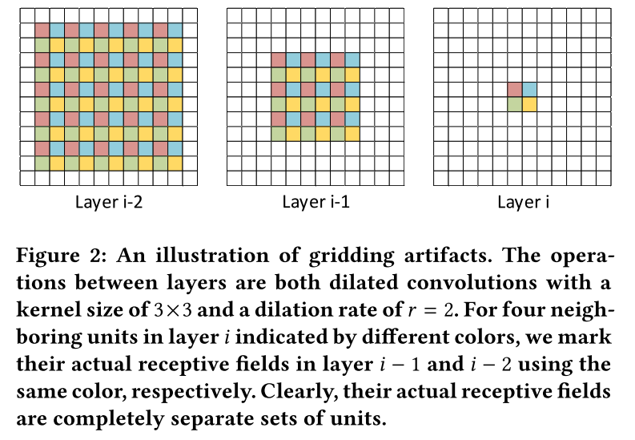
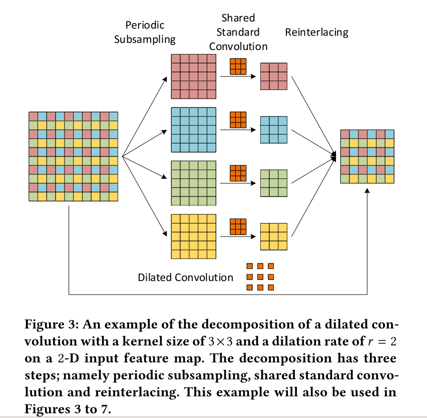
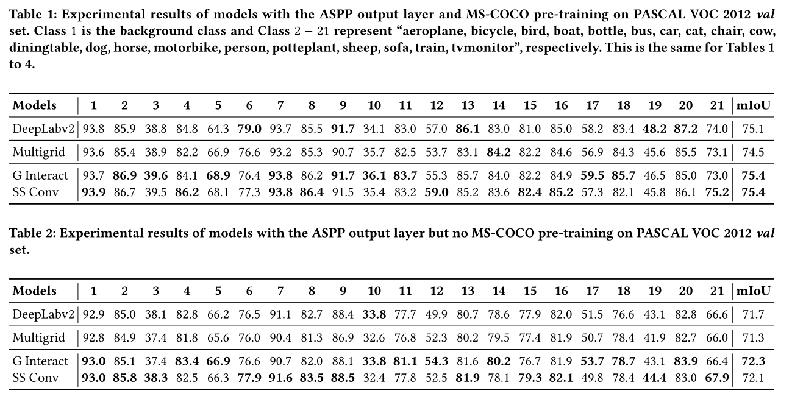
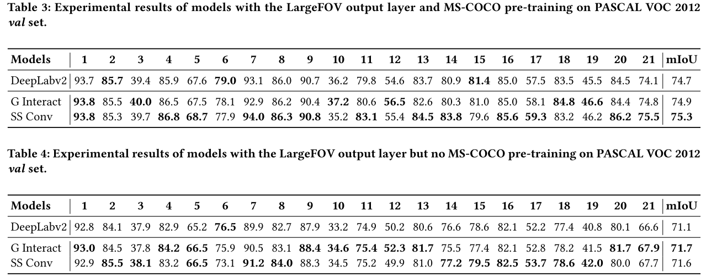
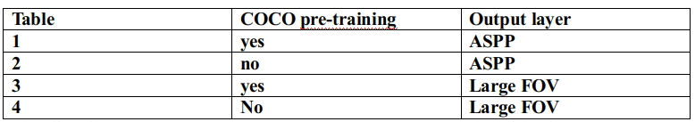

Smoothed Dilated Convolutions 阅读笔记
Smoothed Dilated Convolutions for Improved Dense Prediction
这篇文章主要关注了带孔卷积（dilated convolution 或者叫 atrous convolution）中的gridding artifacts现象。提出了两种比较新颖的解决方法，之后作者对这两种方法进行了分析，发现这两种方法实际上具有相同的原理。除此之外，作者也设置对照试验说明了这两种方法在不同的数据集和不同的output layer中都具有普适性。在文章的最后，作者使用了ERF alalysis 展示了两种方法的效果。 ## Dilated convolution 与 ridding artifacts
首先解释一下什么是dilated convolution（也叫atrous convolution）。以3x3的卷积为例，dilated convolution就是在kernel 的 weights 之间填充0，以增大kernel的感受野。这里涉及到两个变量，一个是kernel size(这里为3)，另一个是dilation rate（为了方便，也叫作rate），表示0的填充多少。零的填充数量=dilation rate - 1。比如说下图最左边，是一个3x3的卷积核，dilation rate=1，填充0的数量为1-1=0，这种情况下和我们常见的卷积是一样的，中间的rate=2，因此填充2-1=1个零，最右边的同理。

有了上面的概念，就很容易理解这篇文章关注的gridding artifacts问题了。当我们将几个dilation convolution串联的时候，就会产生gridding artifacts。原因是，对于那些rate大于1的dilated convolution来说，input中计算output中相邻的两个变量的单元是完全不同的。这句话不好理解，下面看图。 
我们先看layer i，图中红色的unit是由layer i-1中红色的unit计算而来的，layer i中剩下三个unit同理。我们用同样的方法得到layer i-2。layer i-2中所有红色的unit，经过计算，得到了layer i中的红色unit，layer i-2中所有蓝色的unit，经过计算，得到了layer i中蓝色的unit... 通过观察可知，layer i-2中与layer i中红色、蓝色、绿色、黄色对应的units，完全没有交集（准确的说是除了kernel中间的unit之外）。这就是产生gridding artifacts的原因。
Solutions
这篇文章提出了两种解决gridding artifacts的方法。经过分析，实际上两种方法是类似的。下面我们分别介绍。 首先我们来分析一下dilated convolution。 我们先拿出一个10x10（维度d=2）的输入，传统做法是，经过一个kernel size = 3x3，rate=2的卷积之后，得到一个6x6的输出。output与input中的颜色依旧对应。现在我们将这个过程拆分一下，首先我们将input中相同颜色的部分拿出来，获得r^d=4个feature map。接下来我们将dilated convolution kernel中的0拿掉，得到一个3x3的卷积核。这四个feature map经过这个卷积核卷积之后，生成四个3x3的feature map，再将四个feature map还原成一个feature map。

Group Interaction Layers
第一种方法在还原的这一步，建立四个feature map之间的联系。 我们将这一步单独抽出来看。 
这里每个颜色的feature map与每个灰色的feature map之间有一条连线。每条线代表一个scalar，共有16个scalar。每一个灰色的feature map都是由四个feature map乘以不同的权重并求和得到的。这一步在原文中用一个矩阵来表示，不再赘述。原文中将这一层称作Group Interaction Layers。 通过这种方法，每个灰色的feature map都与四个颜色的feature map建立了联系，解决了gridding artifacts的问题。
Separable and Shared Convolutions
这种方法用到了一种叫做Separable and Shared Convolutions的卷积方式。首先来说separate convolution。传统卷积方式为，用一个kernel中不同通道上的子kernel，乘以对应通道上的weights，再相加，生成一个weight。而separate convolution则是没有相加这一步，也就是说，会生成C（C为通道数）个weights。假设input 和output的通道数均为C，以3x3为例，传统卷积需要3x3xCxC个参数，而separate convolution则只需要3x3xC个参数。基于separate convolution提出separate and shared convolutions，即所有通道共享参数，也就是说前面的例子中，只需要3x3个参数。第二种方式就是在input上先采用separate and shared convolution，然后再进行dilated convolution。如下图。

文章中给出的kernel size的计算公式为kernel size=(2xr-1)^d，等于dilated convolution kernel的大小。
Relationship between the Two Methods

下面来分析一下这两种方法之间的联系。 第一种方法是用一个矩阵来融合四种不同颜色的feature map，融合后每个unit相当于是相邻四种不同颜色unit的加权和。 这里要注意两点。一是如figure 6所示，融合只发生在相邻的四种颜色的unit中。比如说要对dilated convolution 之后的feature map进行融合，首先要将6x6的feature map分成 3x3个2x2的units，在每个2x2的units内部进行融合。第二点是对于相同颜色的unit，融合采用的权重是一样的，不同颜色的 unit融合采用的权重是不一样的。这一点回想一下前面figure4就很容易理解了。 第二种方法是在input 上采用separate and shared convolution，并且通道间的kernel是共享的，相当于是对相邻的九个unit之间进行了融合。 Dilated convolution通常是串联使用的，第一种方法相当于在dilated convolution之后进行ss conv（separate and shared convolution），第二种方法相当于在dilated convolution之后进行卷积。设想这两种方式进行串联。那么在串联的中间部分，都是dilated - ss conv - dilated - ss conv交叉出现，不同之处只在首尾。第一种方法是后做dilated conv，第二种方法是先做dilated conv所以这两种方式可以一般化并且与dilated convolution结合起来使用。
Experiment
为了验证这种结构可以在不同数据集和不同的output layer上泛化，作者设置了四个实验。首先对于不同的数据集，作者在voc 2012上进行训练，并且分成了coco pre-training和 without coco pre-training两种。其次对于不同的output layer，作者设置了Large FOV 和ASPP两种output layer进行对比。实验结果如下：
 
用一张表说明一下：  最后作者使用Effective Receptive Field Analysis展示了两种方法的效果，如图： 
Figure 8是对网络的最后一个block 进行ERF，Figure 9 是对网络的最后两个block进行ERF。白色部分越大说明效果越好。
最后总结一下,优点是增加的参数数量较少，没有加重计算负担，并且结构新颖、简单，与数据集和output layer无关，可以广泛应用。缺点是效果提升不是特别高。